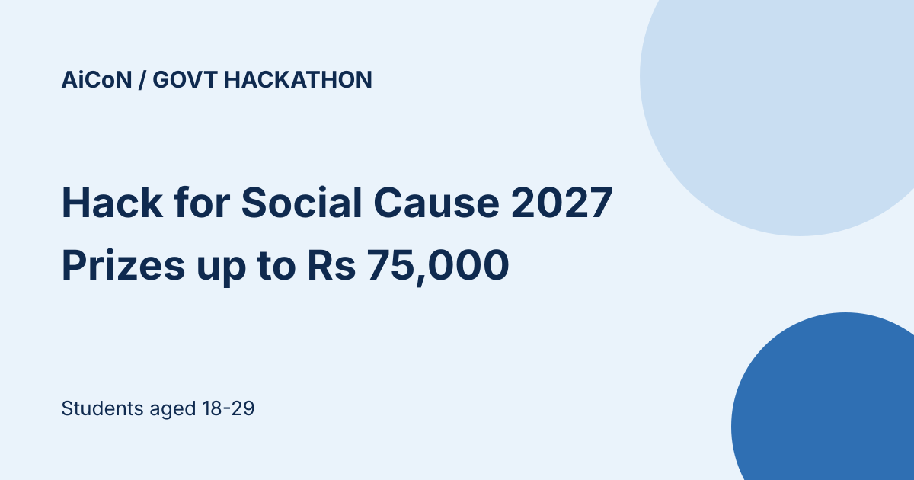

Hack for Social Cause 2027: students 18-29, cash prizes up to ₹75,000
Hack for Social Cause is a national technology challenge for students aged 18 to 29, run by the Ministry of Youth Affairs and Sports under the Viksit Bharat Young Leaders Dialogue (VBYLD) 2027, with IIT Bombay as knowledge partner. The top 5 teams at the national showcase in New Delhi get cash prizes, from ₹75,000 for first place. Entry is free.

Cash prizes (top 5 teams at the national showcase)
- First: ₹75,000
- Second: ₹50,000
- Third: ₹25,000
- Fourth: ₹15,000
- Fifth: ₹15,000
National finalists also get certificates of excellence, and the page lists links to Startup India and incubation programmes. The 36 national finalist teams get online mentoring from IIT Bombay. The FAQ also lists a ₹6,000 prototype development grant for each national finalist team and travel support under applicable MoYAS norms. Cash prizes are subject to tax deductions and may be paid to the Team Lead's registered bank account. These are listed benefits, not an AiCoN guarantee of payment.
Who can enter
- Indian citizens aged 18 to 29 as of 17 August 2026
- Currently enrolled in a college, university or polytechnic. The page says AICTE-registered in one place and AISHE-registered in another, so check that your institution qualifies
- Teams of up to 3 students, or enter alone. Each student can be in only one team
- Every member registers individually on MY Bharat, then the Team Lead registers the team under the Hack for Social Cause track
- HSC 2026 national finalists and winners cannot enter the 2027 national round
What to submit
- A 6 to 7 slide deck on the IIT Bombay template (PPT or PDF, up to 10 MB), covering the problem, solution, impact and implementation, plus a disclosure of how much AI tools were used
- A public GitHub or GitLab repository with complete open-source code, a README with setup steps, architecture notes, sample data or tests, and licence information (FAQ Q21)
- A 3 to 5 minute demo video (preferred, not mandatory): MP4/MOV, at least 720p, up to 80 MB
- Team details, Annexure 1 signed self-certification and a self-attested Student ID Card for each member. The FAQ also asks for government photo ID details at submission
Themes
There are 11 indicative themes, including rural development, education and skills, healthcare, governance and civic tech, environment, digital inclusion, digital safety and cyber fraud awareness, elderly care and assistive technology. You can adapt them to a local problem.
What happens next
- State dates conflict too: the HSC timeline says 16 October to 30 November, its FAQ says 26 October to 30 November, and the VBYLD tracks table says 7 November to 5 December 2026. Three teams per State/UT are shortlisted; confirm the schedule with the organiser
- IIT Bombay screening for national finalists: 1 to 15 December 2026
- Mentoring also differs: HSC says 16 December 2026 to 9 January 2027; VBYLD tracks says 10 December 2026 to 7 January 2027
- National showcase and awards in New Delhi: 10 to 12 January 2027, as currently listed
Rules worth knowing
- Participation is free at every stage
- The VBYLD tracks page says participants may enter only one Innovate for Bharat challenge. Check this before also entering Design for Bharat or Youth Entrepreneurs Challenge
- You keep the intellectual property in your entry. Organisers get a non-exclusive licence to display and promote it with credit, and the FAQ requires a fully open-source public code repository
- Team names must be respectful and not based on a person, place or community
We read the Hack for Social Cause page and the VBYLD 2027 page on mybharat.gov.in on 13 October 2026. We did not register or open the portal.
How to apply
- Confirm the conflicting deadline and institution rule on MY Bharat or through its official support. Do not assume 27 October is an extension.
- Register each member individually. Choose one Team Lead, then register the team in the HSC track.
- Use the IIT Bombay template from the submission page. Prepare the deck, public code repository and signed Annexure 1 with IDs. Include AI-use disclosure.
- Review the portal's current instructions before submitting. Keep its confirmation and final uploaded files; updates stop when the submission window closes.
Frequently asked questions
Is entry free?
The HSC FAQ says participation is free at every stage. Any travel support is subject to MoYAS norms.
Which deadline should I follow?
The HSC page and FAQ say 15 October 2026, while the VBYLD tracks table says 27 October. Prepare for the earlier date and confirm with MY Bharat; AiCoN cannot resolve the contradiction.
Can I enter alone?
Yes. The FAQ allows an individual entry or a team of up to three students.
What changed since this post?
Official HSC and VBYLD pages rechecked on 13 October 2026. Prize amounts remain listed. Deadline, institution-registration rule, state dates and mentoring dates still conflict between official sections. Added the FAQ's public open-source repository requirement, finalist grant, travel conditions and prize-tax note. AiCoN did not register or test a submission, and no government emblem is used.
Sources: Hack for Social Cause (MY Bharat), VBYLD 2027 tracks and timeline. Checked 13 October 2026. This is an AiCoN explainer, not a government publication.